Chapter 6: Network Devices, Data Centers & Cloud Networking¶
Networks are built from physical boxes (switches, routers, firewalls) made by a handful of big vendors and run by special operating systems. This chapter walks from a home Wi-Fi setup up to office campuses, giant data centers, public clouds, Kubernetes clusters and the ultra-fast fabrics that train AI models. By the end you will recognise the gear, the designs and the jargon used in real networking jobs.
6.1 Network Devices You Must Know¶
A network is built from boxes that each do one job: some connect computers in the same room, some link different networks together, and some guard the doors. Knowing which device works at which OSI layer (the 7-level model of how networks function) tells you what it can see and decide.

Think of it like…
Think of a city: switches are local streets inside a neighbourhood, routers are motorway junctions between towns, and firewalls are security checkpoints at the city gates.
Real-world example
At the fictional Greenleaf Dental clinic, each PC has a network card (NIC) plugged by cable into a patch panel, then into a 24-port switch. The switch connects to a firewall, which connects to a router, which connects to the fibre ONT on the wall installed by the ISP. A ceiling access point lets tablets join over Wi-Fi. When a receptionist books an appointment in a cloud app, traffic passes NIC, switch, firewall, router and ONT in that order.
How it works¶
- End devices send data through their NIC (wired or wireless).
- Switches forward frames inside the local network using MAC addresses (Layer 2).
- Routers move packets between different networks using IP addresses (Layer 3).
- Firewalls, proxies and load balancers inspect or steer traffic based on rules.
- Modems or ONTs convert signals for the ISP's cable, phone line or fibre.
Who uses it
Every network technician, help-desk worker and network engineer must identify these devices on day one; they appear in CompTIA Network+ and Cisco CCNA exams.
Key takeaway
Memorise the layer of each device: hub = Layer 1, switch/bridge = Layer 2, router = Layer 3, multilayer switch = Layers 2 and 3, proxy/L7 load balancer = Layer 7.
Going deeper
- Domains to know: a hub is one collision domain; every switch port is its own collision domain but the whole VLAN is one broadcast domain; each router interface separates broadcast domains.
- A switch learns source MAC addresses into its MAC (CAM) table, forwards known destinations out one port, floods unknown or broadcast frames, and ages entries out after about 300 seconds by default.
- Routers choose routes by longest prefix match, then administrative distance and metric; the control plane runs on a CPU while forwarding is done by ASICs or network processors.
- Firewall generations: packet filters check headers only, stateful firewalls track connections, next-generation firewalls add application identity, user identity, IPS and TLS inspection.
- Datasheet maths: switching capacity counts both directions, so 48 x 1G plus 4 x 10G ports equals 176 Gbps full duplex; also check packets per second and buffer size.
- Enterprise boxes come as fixed or modular chassis, measured in rack units (1U = 1.75 in), with redundant hot-swappable power supplies and fans for high availability.
Common mistakes & misconceptions
- Calling the ISP box 'the modem': it is usually a modem, router, switch, access point and firewall combined; troubleshoot each role separately.
- Thinking a switch stops broadcasts: switches forward broadcasts to every port in the VLAN; only routers or separate VLANs split broadcast domains.
- Assuming an access point routes: most APs bridge Wi-Fi onto the wired VLAN; the router or Layer 3 switch does the routing.
- Comparing devices only by port speed: packets per second, buffers, PoE budget and features often matter more.
Try it: See your own NIC, its MAC address and your default gateway (router)¶
ipconfig /all # Windows: look for Physical Address and Default Gateway
ip link show # Linux: list NICs and MAC addresses
ip route show default # Linux: show your router's IP
Key protocols, devices, standards & tools¶
| Name | What it does | Example |
|---|---|---|
| Network Interface Card (NIC) IEEE 802.3 (Ethernet) / IEEE 802.11 (Wi-Fi) · Device · Layer 2 · Current |
Hardware that connects a computer to a network; each has a unique burned-in MAC address. | A laptop has a Wi-Fi NIC and a USB-C Ethernet adapter; servers often have dual 25 Gb/s NICs for speed and redundancy. |
| Repeater and hub IEEE 802.3 (original Ethernet) · Device · Layer 1 · Obsolete |
A repeater boosts a signal; a hub is a multiport repeater that copies every bit to every port, causing collisions. | A 1990s office hub sent everyone's traffic to every PC; replaced by switches. Today, Wi-Fi range extenders are the closest repeater relatives. |
| Bridge IEEE 802.1D (now part of IEEE 802.1Q) · Device · Layer 2 · Legacy |
Joins two network segments and forwards frames only where needed, based on learned MAC addresses. | Historically split a busy LAN in two; today 'bridging' survives in software, like a Linux bridge or a wireless bridge between two buildings. |
| Switch (Layer 2) IEEE 802.1Q / 802.3 · Device · Layer 2 · Current |
Connects many devices in one LAN, learning which MAC address sits on which port and sending frames only there. | A 48-port PoE switch in an office closet powers phones and access points and supports VLANs to separate staff and guest traffic. |
| Multilayer switch (Layer 3 switch) Vendors (Cisco Catalyst, Arista, HPE Aruba CX) · Device · Multi-layer · Current |
A switch that can also route between VLANs at wire speed using hardware chips. | A core switch routes between VLAN 10 (Staff) and VLAN 20 (Printers) using SVIs, without a separate router. |
| Router hardware platforms Vendors (Cisco, Juniper/HPE, Nokia, MikroTik and others) · Device · Layer 3 · Current |
The box that joins networks: WAN and LAN ports, a CPU for routing protocols and often chips for fast forwarding; sized from branch to core. | A branch uses a small router with a fibre WAN port and 5G backup; an ISP core router has dozens of 400G ports. |
| Modem CableLabs DOCSIS / ITU-T G.992-G.993 (DSL) · Device · Layer 1 · Current |
Modulator-demodulator: converts digital data to signals for cable TV coax or phone lines, and back. | A DOCSIS 3.1 cable modem connects a flat's coax socket to the ISP so the home router can reach the internet. |
| Wireless access point (AP) IEEE 802.11 / Wi-Fi Alliance · Device · Layer 2 · Current |
Lets Wi-Fi devices join a wired network, acting as a bridge between radio and Ethernet. | A school mounts one Wi-Fi 6E AP per classroom, each powered by PoE from the corridor switch. |
| Firewall Vendors (Palo Alto, Fortinet, Cisco, Check Point) / open source · Device · Multi-layer · Current |
Allows or blocks traffic based on rules; next-generation firewalls also identify apps, users and threats. | A rule allows staff to reach HTTPS (TCP 443) on the internet but blocks inbound connections except to the mail server. |
| VPN concentrator Vendors (Cisco, Fortinet, Palo Alto Networks) or a firewall feature · Device · Multi-layer · Current |
A device that terminates many encrypted VPN tunnels from remote users or branch sites, authenticating each one and routing traffic inside. | Five hundred home workers' laptops connect through IPsec or TLS VPN to the head-office concentrator before reaching internal apps. |
| Load balancer Vendors (F5, Citrix) / software (HAProxy, NGINX) / cloud · Device · Multi-layer · Current |
Spreads incoming requests across several servers so no single server is overloaded and failures are hidden. | An online shop's load balancer sends visitors to three web servers and stops using one that fails its health check. |
| Proxy server Software (Squid, NGINX, Zscaler cloud proxy) · Device · Layer 7 · Current |
A middleman that makes requests on behalf of clients, used for filtering, caching, privacy or logging. | A school's web proxy blocks gambling sites and caches popular videos to save internet bandwidth. |
| Gateway General networking term · Concept · Multi-layer · Current |
Any device that connects two different networks or protocols; 'default gateway' is the router your PC sends off-network traffic to. | A PC with IP 192.168.1.50 uses default gateway 192.168.1.1 to reach any website outside its own subnet. |
| Media converter Various vendors (IEEE 802.3 media types) · Device · Layer 1 · Current |
Converts between cable types, typically copper Ethernet to fibre, to extend distance beyond 100 metres. | A warehouse 400 m from the main office uses a pair of copper-to-fibre media converters over a single-mode fibre run. |
| ONT / ONU ITU-T G.984 (GPON) / G.9807.1 (XGS-PON) · Device · Layer 1 · Current |
Optical Network Terminal/Unit: the box where an ISP's fibre ends at your premises, converting light to Ethernet. | A fibre-to-the-home customer's ONT on the hallway wall feeds an Ethernet cable to their Wi-Fi router. |
| Patch panel ANSI/TIA-568 / ISO/IEC 11801 cabling standards · Device · Layer 1 · Current |
A passive panel where permanent building cables terminate, so short patch cords can connect them to switches. | Desk socket 3-14 runs through the wall to port 14 on patch panel B; a patch cord links it to switch port 14. |
6.2 Network Equipment Vendors¶
A small number of companies make most of the world's switches, routers, firewalls and Wi-Fi gear. Each has its own product lines, operating system and certification path, and job adverts often ask for experience with a specific vendor.
Think of it like…
Like car makers: all cars have wheels and brakes (standards such as Ethernet and BGP), but a Toyota and a BMW have different dashboards and service manuals.
Real-world example
Sam, a junior engineer at the fictional Harbour Logistics, finds Cisco Catalyst switches in the offices, Fortinet FortiGate firewalls at each depot, Ubiquiti access points in the warehouse and Arista switches in the data center. Because all speak standard protocols (802.1Q VLANs, OSPF, BGP), they work together, but Sam must learn each vendor's command line. Sam starts with the CCNA because Cisco has the largest enterprise share, then adds Fortinet training.
How it works¶
- Identify the market: home/SMB, enterprise campus, data center, service provider, or security.
- Learn each vendor's flagship product families and operating system.
- Check ownership and support status: acquisitions change product names and roadmaps.
- Use vendor-neutral standards so mixed-vendor networks still interoperate.
- Pick a certification track (Cisco CCNA, Juniper JNCIA, Fortinet, Palo Alto, MikroTik MTCNA) that matches local job adverts.
Who uses it
Network engineers, procurement teams and managed-service providers choose and support these vendors daily.
Key takeaway
Know the big ownership facts: HPE completed its acquisition of Juniper Networks on 2 July 2025, NVIDIA bought Mellanox in 2020, and Broadcom bought VMware in 2023.
Going deeper
- Many vendors build on the same merchant silicon: Broadcom Tomahawk chips for data-centre switching, Jericho for deep-buffer routing, Trident for enterprise; Cisco Silicon One and NVIDIA Spectrum are alternatives.
- Switch chip capacity roughly doubles every two years; Broadcom's Tomahawk 5 offers 51.2 Tbps and Tomahawk 6 doubles that to 102.4 Tbps, enabling 64 or 128 ports of 800G.
- White-box (disaggregated) switches come from manufacturers such as Edgecore, Celestica and UfiSpace; an ONIE boot loader installs a chosen NOS like SONiC on bare hardware.
- Every product has end-of-sale and end-of-support dates; gear past end of support gets no security patches, so lifecycle planning is part of network design.
- Buyers compare vendors with analyst reports (such as Gartner Magic Quadrants), total cost including licences and support, existing staff skills and interoperability test results.
- Certification ladders follow vendors: Cisco CCNA-CCNP-CCIE, Juniper JNCIA-JNCIS-JNCIP-JNCIE, Fortinet's associate-to-expert tracks; vendor-neutral options include CompTIA Network+ and CWNA.
Common mistakes & misconceptions
- Assuming vendor-specific features interoperate: HSRP, vPC, StackWise or Cisco ACI contracts are proprietary; mixed networks need open standards such as VRRP, LACP and EVPN.
- Ignoring acquisitions: product names, licences and roadmaps change after mergers, so check current support status before buying.
- Buying cheap second-hand gear past end of support for production: it may work but gets no security fixes.
- Learning only one CLI: concepts transfer across vendors, but job adverts often expect at least two command styles.
Try it: Find the vendor, model and OS version on a lab device (works on Cisco, Arista, Juniper)¶
show version ! Cisco IOS XE / NX-OS / Arista EOS / Junos
show inventory ! Cisco/Arista: hardware model and serial numbers
show chassis hardware # Juniper Junos
Key protocols, devices, standards & tools¶
| Name | What it does | Example |
|---|---|---|
| Cisco Systems Cisco (San Jose, USA, founded 1984) · Organisation · Current |
Largest enterprise networking vendor: Catalyst campus switches, Nexus data-center switches, routers, Meraki cloud-managed gear and security. | Most companies' office switches run Cisco IOS XE; the CCNA is the most requested entry-level networking certification. |
| Juniper Networks (part of HPE) Hewlett Packard Enterprise (acquisition completed 2 July 2025) · Organisation · Current |
Router, switch and AI-driven Wi-Fi (Mist) vendor running Junos; now part of HPE's networking business alongside Aruba. | Internet service providers run Juniper MX routers for BGP peering; engineers learn Junos through the JNCIA-Junos certification. |
| Arista Networks Arista (Santa Clara, USA, founded 2004) · Organisation · Current |
Leading high-speed data-center and cloud switch vendor running Linux-based EOS, managed with CloudVision. | Large cloud providers and AI clusters use Arista 400G/800G leaf and spine switches in their data centers. |
| HPE Aruba Networking Hewlett Packard Enterprise (bought Aruba in 2015) · Organisation · Current |
Enterprise Wi-Fi, CX campus switches and cloud management (HPE Aruba Networking Central); now combined with Juniper inside HPE. | A university deploys Aruba Wi-Fi 6E access points and CX switches, managed from a cloud dashboard. |
| Huawei Huawei Technologies (Shenzhen, China, founded 1987) · Organisation · Current |
Huge telecom and enterprise equipment maker; restricted or banned in some countries (e.g. USA, UK 5G) over security concerns. | Many carriers in Asia, Africa and Latin America run Huawei 5G radios and NetEngine routers; HCIA is its entry certification. |
| Nokia Nokia (Espoo, Finland) · Organisation · Current |
Telecom vendor for mobile networks, IP routers (SR OS, SR Linux) and optical gear; bought Alcatel-Lucent (2016) and Infinera (2025). | A national ISP's backbone uses Nokia 7750 SR routers, and a data center trials Nokia SR Linux switches. |
| Ericsson Ericsson (Stockholm, Sweden, founded 1876) · Organisation · Current |
One of the biggest mobile network vendors: 4G/5G radio access, core networks and transport for telecom operators. | A mobile operator upgrades its rooftop cell sites to Ericsson 5G radios to deliver faster phone data. |
| Extreme Networks Extreme Networks (Morrisville, North Carolina, USA) · Organisation · Current |
Enterprise switching and Wi-Fi vendor with cloud management (ExtremeCloud IQ); absorbed Aerohive, Avaya networking and Brocade data-center lines. | Sports stadiums and schools use Extreme Wi-Fi to handle thousands of simultaneous phones. |
| Fortinet Fortinet (Sunnyvale, USA, founded 2000) · Organisation · Current |
Security-first vendor: FortiGate firewalls running FortiOS with custom ASIC chips, plus SD-WAN, switches and access points. | A retail chain puts a FortiGate in every store for firewall, VPN and SD-WAN in one box. |
| Palo Alto Networks Palo Alto Networks (Santa Clara, USA, founded 2005) · Organisation · Current |
Next-generation firewall pioneer (PAN-OS, App-ID) and cloud security/SASE provider (Prisma Access). | A bank's data-center firewall identifies apps like Salesforce or BitTorrent by behaviour, not just port number. |
| Ubiquiti Ubiquiti Inc. (New York, USA) · Organisation · Current |
Affordable prosumer and small-business gear (UniFi Wi-Fi, switches, gateways) managed from one controller app. | A small hotel installs UniFi access points and a UniFi gateway, managed from a phone app. |
| MikroTik MikroTik (Riga, Latvia, founded 1996) · Organisation · Current |
Low-cost routers and switches (RouterBOARD) running feature-rich RouterOS; popular with small ISPs. | A rural wireless ISP uses MikroTik routers for BGP, PPPoE and bandwidth limits; engineers take the MTCNA course. |
| TP-Link TP-Link (founded Shenzhen, China, 1996; US arm TP-Link Systems in California) · Organisation · Current |
One of the biggest sellers of home routers, mesh Wi-Fi (Deco) and SMB gear (Omada). | Many households' ISP-supplied or shop-bought Wi-Fi routers are TP-Link Archer models. |
| Netgear Netgear (San Jose, USA) · Organisation · Current |
Consumer and small-business networking: Nighthawk routers, Orbi mesh Wi-Fi, and managed switches including AV-over-IP models. | A home office uses an Orbi mesh system; a church streams video using a Netgear M4250 AV switch. |
| Dell Technologies (networking) Dell (Round Rock, Texas, USA) · Organisation · Current |
PowerSwitch data-center switches running Dell SmartFabric OS10 or Enterprise SONiC, often sold with Dell servers. | A company buys Dell servers plus Dell PowerSwitch leaf switches running Enterprise SONiC for a private cloud. |
| NVIDIA Networking (formerly Mellanox) NVIDIA (bought Mellanox, completed April 2020) · Organisation · Current |
AI networking leader: Quantum InfiniBand, Spectrum Ethernet switches, ConnectX NICs, BlueField DPUs and Cumulus Linux. | An AI lab links thousands of GPUs with NVIDIA Quantum-X800 InfiniBand or Spectrum-X Ethernet switches. |
6.3 Network Operating Systems¶
Switches, routers and firewalls are computers too, and each runs an operating system (NOS) that provides the command line, routing protocols and management. Some are vendor-only (Cisco IOS XE, Junos), while others are open or Linux-based and run on many brands of hardware.

Think of it like…
Like Windows, macOS and Android for phones and PCs: the hardware matters, but the OS decides which commands you type and which features you get.
Real-world example
Priya studies for her CCNA on Cisco IOS XE, where she types 'show ip interface brief'. At her new job the data center runs SONiC on white-box switches, and the edge firewall runs OPNsense. She discovers that the same OSPF and BGP concepts apply everywhere; only the syntax changes. Her home lab uses FRRouting on a Linux VM to practise BGP for free.
How it works¶
- The NOS boots on the device's CPU and loads its configuration file.
- Control-plane software (OSPF, BGP, STP) builds routing and MAC tables.
- The NOS programs those tables into the hardware forwarding chip (ASIC).
- Admins manage it via CLI (SSH), web GUI, or APIs such as NETCONF/RESTCONF.
- Updates and patches are applied regularly to fix bugs and security flaws.
Who uses it
Network engineers, NOC staff and automation developers work inside these operating systems every day.
Key takeaway
Know which Cisco OS runs where: IOS XE on campus/enterprise routers, NX-OS on Nexus data-center switches, IOS XR on service-provider routers.
Going deeper
- Older NOSes were monolithic (classic IOS ran everything in one image); modern ones run each protocol as a separate process on Linux, so one crash or restart need not reboot the box.
- Cisco IOS keeps running-config in RAM and startup-config in NVRAM; Junos, IOS XR, VyOS and PAN-OS edit a candidate, check it, commit it and keep numbered rollbacks.
- Junos 'commit confirmed 5' and IOS XR 'commit confirmed' undo themselves unless confirmed, protecting engineers from locking themselves out of remote devices.
- In disaggregated networks ONIE installs the NOS on white-box hardware and the Switch Abstraction Interface (SAI) lets SONiC drive ASICs from different chip vendors.
- Upgrades use install or bundle modes, and some platforms support ISSU (in-service software upgrade) to change versions with little or no traffic loss.
- Security matters: in October 2023, CVE-2023-20198 in the IOS XE web UI let attackers compromise tens of thousands of exposed devices; disable unused management services.
Common mistakes & misconceptions
- Forgetting to save on Cisco IOS: running-config changes are lost on reboot until you copy them to startup-config.
- Typing changes on Junos or IOS XR and walking away: nothing takes effect until you commit.
- Mixing up NX-OS and IOS XE syntax: similar but not identical, for example NX-OS needs 'feature' commands to enable protocols.
- Upgrading without reading release notes: check hardware support, upgrade path and known bugs, and keep the old image for rollback.
Try it: The same 'show interfaces' idea on different operating systems (lab devices)¶
show ip interface brief ! Cisco IOS XE / Arista EOS
show interface brief ! Cisco NX-OS
show interfaces terse # Juniper Junos
/interface print # MikroTik RouterOS
vtysh -c 'show ip route' # FRRouting on Linux
Key protocols, devices, standards & tools¶
| Name | What it does | Example |
|---|---|---|
| Cisco IOS (classic) Cisco · Software · Legacy |
Cisco's original monolithic router/switch OS; its command style became the industry's de facto CLI. | Older Catalyst 2960 switches and ISR G2 routers still run classic IOS in many labs and small offices. |
| Cisco IOS XE Cisco · Software · Current |
Modern Linux-based successor to IOS with the same CLI, plus APIs and programmability. | Catalyst 9000 switches, ISR 1000 and Catalyst 8000 routers all run IOS XE; most CCNA labs use it. |
| Cisco NX-OS Cisco · Software · Current |
Data-center OS for Nexus switches, supporting VXLAN-EVPN, vPC and automation features. | A bank's Nexus 9000 leaf switches run NX-OS in a VXLAN-EVPN fabric. |
| Cisco IOS XR Cisco · Software · Current |
Carrier-grade OS for service-provider routers with commit-based configuration and high availability. | An ISP's ASR 9000 and Cisco 8000 core routers run IOS XR to carry national internet traffic. |
| Running vs startup and commit models Cisco IOS/IOS XE (running/startup); Junos and IOS XR (candidate + commit) · Concept · Current |
IOS applies commands instantly but saves only on 'copy run start'; Junos and IOS XR stage a candidate configuration, applied by commit with rollback. | An engineer's IOS changes vanish after a power cut because nobody typed 'copy running-config startup-config' to save them. |
| Junos OS / Junos OS Evolved Juniper Networks (HPE) · Software · Current |
Juniper's single OS across routers, switches and firewalls; Junos is FreeBSD-based, Junos Evolved is Linux-based. | An engineer types 'configure', edits, then 'commit confirmed 5' so a mistake rolls back automatically after five minutes. |
| Arista EOS Arista Networks · Software · Current |
Extensible Operating System: Linux-based, with a state database (SysDB) that lets processes restart without outages. | Engineers can open a bash shell on an Arista switch and run Python scripts directly alongside a Cisco-like CLI. |
| SONiC Created by Microsoft (2016); Linux Foundation project since 2022 · Software · Current |
Open-source NOS for data-center switches, running on many vendors' hardware via the Switch Abstraction Interface (SAI). | Microsoft Azure runs SONiC across its data centers; Dell and others sell enterprise-supported SONiC versions. |
| Cumulus Linux NVIDIA (acquired Cumulus Networks in 2020) · Software · Current |
Debian-based NOS that makes a switch look like a Linux server, with NVUE CLI and standard Linux tools. | An engineer configures BGP on an NVIDIA Spectrum switch using 'nv set' commands or ordinary Linux files. |
| MikroTik RouterOS MikroTik · Software · Current |
Feature-packed router OS (v7 current) with CLI, WinBox GUI and web UI, running on MikroTik hardware or x86. | A small ISP uses RouterOS for PPPoE customers, OSPF, BGP and per-customer bandwidth queues. |
| VyOS VyOS project (open-source fork of Vyatta, 2013) · Software · Current |
Open-source Debian-based router/firewall OS with a Junos-like configure-commit CLI; runs on VMs, bare metal and cloud. | A start-up runs VyOS in AWS as a virtual router terminating IPsec VPNs to its office. |
| OpenWrt OpenWrt project (open source) · Software · Current |
Linux distribution for home routers that replaces vendor firmware, adding packages, VLANs, VPNs and regular updates. | A student flashes OpenWrt on an old router to add WireGuard VPN and ad-blocking. |
| pfSense Netgate (FreeBSD-based; CE and Plus editions) · Software · Current |
Popular open-source firewall/router with a web GUI: NAT, VPN, VLANs, DHCP, IDS packages. | A school IT team turns a spare PC with two NICs into a pfSense firewall with captive portal for guests. |
| OPNsense Deciso (forked from pfSense in 2015) · Software · Current |
Open-source FreeBSD-based firewall/router with a modern GUI and frequent security releases. | A home-lab user runs OPNsense in a VM with Suricata IDS and WireGuard VPN. |
| FortiOS & PAN-OS Fortinet (FortiOS); Palo Alto Networks (PAN-OS) · Software · Current |
Firewall operating systems: FortiOS runs FortiGates with built-in SD-WAN; PAN-OS runs Palo Alto firewalls with App-ID policies and commit-based changes. | On a Palo Alto firewall nothing changes until 'Commit'; on a FortiGate a policy edit applies as soon as the CLI block ends. |
| FRRouting (FRR) Linux Foundation project (2017 fork of Quagga) · Software · Layer 3 · Current |
Open-source routing suite for Linux: BGP, OSPF, IS-IS, RIP, PIM, EVPN; used inside SONiC, Cumulus and VyOS. | A learner installs FRR on two Ubuntu VMs and builds a BGP peering with 'vtysh' to practise for exams. |
6.4 Home & Small Office Networks¶
A home or small office (SOHO) network usually relies on one box from the internet provider that is a modem, router, switch, Wi-Fi access point, DHCP server, NAT device and firewall all at once. Extra gear such as mesh Wi-Fi, a small switch or a NAS (network storage) is added as needs grow.
Think of it like…
The home router is like the front door, letterbox and receptionist of a house in one: it receives all post (traffic), hands out room numbers (IP addresses) and keeps strangers out.
Real-world example
The Okafor family has fibre: ONT on the wall, then the ISP router at 192.168.1.1. It hands out addresses 192.168.1.100-199 by DHCP, translates them to one public IP with NAT, and blocks unsolicited inbound traffic. A 3-node mesh system covers the upstairs, an 8-port unmanaged switch behind the TV links the console and smart TV, and a NAS stores photos. Visitors use a separate guest Wi-Fi that cannot see the NAS. Typical diagram: Internet - ONT - Router/Wi-Fi - (Switch: TV, console, NAS) + (Mesh nodes: phones, laptops) + (Guest SSID).
How it works¶
- The modem or ONT connects to the ISP and receives a public IP (or a shared CGNAT address).
- The router's DHCP server gives each device a private IP, gateway and DNS server.
- NAT rewrites private addresses to the single public IP for outgoing traffic.
- The built-in stateful firewall allows replies but blocks unrequested inbound connections.
- Port forwarding or UPnP opens specific inbound ports only when needed.
- Guest Wi-Fi and IoT networks keep visitors and smart gadgets away from personal devices.
Who uses it
Everyone at home, plus help-desk staff, small-business IT support and anyone working remotely.
Key takeaway
Best practice: change the router's admin password, keep firmware updated, use WPA3 (or WPA2-AES), disable UPnP, WPS and remote admin if not needed, and put IoT devices on a guest or IoT network.
Going deeper
- Home routers usually use 192.168.0.0/24, 192.168.1.0/24 or 10.0.0.0/24 from the RFC 1918 private ranges, with DHCP leases often lasting about a day.
- Under carrier-grade NAT the router's WAN address comes from 100.64.0.0/10, so inbound port forwarding cannot work; IPv6, a mesh VPN or asking the ISP for a public IPv4 are the fixes.
- With IPv6 the ISP typically delegates a /56 or /64 prefix by DHCPv6 prefix delegation, every device gets a global address, and the router's stateful firewall becomes the main protection.
- The Mirai botnet (2016) built huge DDoS attacks from cameras and routers with default passwords; the UK PSTI regime has banned universal default passwords on consumer connected devices since April 2024.
- Wi-Fi is usually the bottleneck at home: wire consoles, TVs and desktops where possible, and look for 2.5 GbE ports when the internet plan exceeds 1 Gbps.
- A small office needs the same building blocks as an enterprise in miniature: VLANs for staff, guests and cameras, a firewall with VPN, backups on a NAS, and a UPS.
Common mistakes & misconceptions
- Forwarding RDP, SMB or NAS admin ports to the internet: these are scanned constantly; use a VPN or mesh VPN instead.
- Running two routers in series by accident: double NAT breaks gaming and hosting; set the ISP box to bridge mode or turn the second router into an access point.
- Leaving IoT gadgets on the main network: a compromised camera can then attack laptops and the NAS; use the guest or IoT SSID.
- Assuming the router firewall stops everything: it blocks unsolicited inbound traffic but not malware that a user downloads and runs.
Try it: Find your router, see your local neighbours and trace the first hops to the internet¶
ipconfig # Windows: note IPv4 address and Default Gateway
arp -a # devices your PC has recently talked to on the LAN
tracert -h 3 example.com # Windows: first 3 hops (router, ISP...)
traceroute -m 3 example.com # Linux/macOS equivalent
Key protocols, devices, standards & tools¶
| Name | What it does | Example |
|---|---|---|
| ISP router (home gateway) ISP-supplied (various vendors) · Device · Multi-layer · Current |
All-in-one box: router, switch, Wi-Fi access point, DHCP server, NAT and firewall, often with a built-in modem or ONT. | A broadband customer plugs the ISP router into the fibre ONT; all home devices connect to it by Wi-Fi or its four LAN ports. |
| NAS (Network-Attached Storage) Vendors (Synology, QNAP, TrueNAS); SMB/NFS protocols · Device · Layer 7 · Current |
A small always-on storage server sharing files and backups to all devices over the network. | A photographer's NAS with two mirrored drives stores photo archives, accessed from laptops via SMB. |
| Stateful firewall (SPI) Built into home routers · Technology · Multi-layer · Current |
Stateful packet inspection allows replies to connections you started and drops unsolicited inbound traffic. | Your laptop's web request gets its reply, but an internet scanner probing your public IP gets no answer. |
| Guest & IoT Wi-Fi Router feature (separate SSID, often its own VLAN) · Concept · Layer 2 · Current |
Extra SSIDs that give visitors and smart gadgets internet access only, keeping them away from laptops, phones and the NAS. | Smart plugs and visitors use 'Okafor-Guest'; if a cheap camera is hacked, it still cannot reach the family's laptops. |
| DNS filtering (e.g. Pi-hole) Pi-hole (open source) / services like Quad9, Cloudflare 1.1.1.1 for Families · Software · Layer 7 · Current |
A DNS server that refuses to resolve ads, trackers or malware domains for every device on the network. | A Raspberry Pi running Pi-hole is set as the router's DNS server, blocking ads on smart TVs too. |
| Bridge mode / bring your own router ISP router feature (also called modem mode or IP passthrough) · Concept · Layer 3 · Current |
Turns the ISP box into a plain modem so your own router receives the public IP and does all routing, NAT and Wi-Fi. | Mr Okafor switches the ISP hub to modem mode and plugs in his own router, ending double-NAT problems with online games. |
| Double NAT Common misconfiguration (two NAT routers in series) · Concept · Layer 3 · Current |
Two routers both translating addresses: browsing works, but port forwarding, UPnP, some VPNs and game hosting break. | A console reports 'Strict NAT' because a mesh router doing NAT sits behind the ISP router, which also does NAT. |
| Dynamic DNS (DDNS) Providers such as DuckDNS and No-IP, or router-vendor services; RFC 2136 dynamic updates · Service · Layer 7 · Current |
Keeps a hostname pointing at your home's changing public IP address, updated automatically by the router or a small client. | okafor-home.duckdns.org always resolves to the current home IP, so the family VPN keeps working after the ISP changes it. |
| Mesh VPN (Tailscale, ZeroTier) Tailscale (WireGuard-based), ZeroTier; self-hosted options such as Headscale · Software · Layer 3 · Current |
Links your devices into a private encrypted network across the internet, working through NAT without opening router ports. | Mr Okafor reaches the home NAS from his phone abroad over Tailscale, with no port forwarding exposed to the internet. |
| SOHO firewall / UTM appliance Vendors (Fortinet FortiGate, UniFi gateways, Netgate pfSense, Firewalla) · Device · Multi-layer · Current |
A small-business security box combining firewall, VPN, intrusion prevention, web filtering and VLANs: Unified Threat Management in one unit. | A six-person accountancy office replaces the ISP router's firewall with a small FortiGate to add staff VPN and web filtering. |
| Smart (web-managed) switch Vendors (TP-Link Omada, Netgear, UniFi, others); IEEE 802.1Q VLANs · Device · Layer 2 · Current |
A low-cost switch with a simple web page for VLANs, QoS and port monitoring: the step between unmanaged and enterprise switches. | A small office puts staff PCs on VLAN 10 and IP cameras on VLAN 20 using one 16-port smart switch. |
| UPS for network gear Vendors (APC by Schneider Electric, Eaton, CyberPower) · Device · Layer 1 · Current |
Uninterruptible Power Supply: a battery backup that keeps the ONT, router and switch running through short power cuts. | A small UPS keeps a dental surgery's router and card terminal online for 40 minutes during a power cut. |
| TR-069 / TR-369 (ISP remote management) Broadband Forum (TR-069 CWMP; TR-369 USP) · Protocol · Layer 7 · Current |
Protocols ISPs use to remotely configure, update and troubleshoot customer routers; TR-369 (USP) is the modern successor. | An ISP support agent pushes a firmware update and reads Wi-Fi signal statistics from a customer's router without a home visit. |
| Router admin hardening Best practice; UK PSTI rules (2024), ETSI EN 303 645 · Concept · Multi-layer · Current |
Securing the router itself: unique admin password, automatic firmware updates, remote admin and WPS off, and unused port forwards removed. | After the Mirai botnet hijacked devices using default passwords, routers increasingly ship with a unique password printed on the label. |
| mDNS / Bonjour discovery IETF RFC 6762 (mDNS), RFC 6763 (DNS-SD); UDP 5353 · Protocol · Layer 7 · Current |
Lets devices announce and find services such as printers and screen casting by name on the local network, with no DNS server. | A laptop finds 'Office-Printer.local' automatically, but cannot see a Chromecast placed on the isolated guest network. |
6.5 Enterprise Campus Network Design¶
A campus network connects all the users, phones, printers and Wi-Fi in one or more nearby buildings. Engineers organise it in layers (core, distribution, access) with duplicate links and devices, so it is fast, easy to grow and keeps working when something breaks.
Think of it like…
Like a road system: small streets (access) feed into main roads (distribution), which join a motorway ring (core); if one road closes there is always a detour.
Real-world example
Riverside College has three buildings. Each floor has an IDF (wiring closet) with access switches; each building has two distribution switches; two core switches sit in the MDF in the main building next to the internet firewalls. Every access switch has two fibre uplinks, one to each distribution switch, bundled with LACP, and VRRP gives each VLAN a shared default gateway. When one distribution switch fails during an exam, students notice nothing because traffic shifts to the other.
How it works¶
- Access layer: connect end devices, apply VLANs, PoE and port security.
- Distribution layer: aggregate access switches, route between VLANs and apply policies.
- Core layer: move traffic between buildings and to the data center/internet as fast as possible.
- Add redundancy: dual uplinks (LACP), dual gateways (VRRP/HSRP) and loop protection (RSTP).
- Use structured cabling from MDF to IDFs to desks, labelled to TIA-606.
- Document everything with physical and logical network diagrams.
Who uses it
Network engineers and architects in universities, hospitals, offices and factories design and run campus networks.
Key takeaway
Exam favourite: the three-tier model is core/distribution/access; small sites merge core and distribution into a 'collapsed core' (two-tier).
Going deeper
- Classic Cisco guidance budgets about 20:1 oversubscription from access to distribution and 4:1 from distribution to core, then adjusts for video, Wi-Fi 7 uplinks and heavy users.
- Keep VLANs local to one closet or building instead of stretching them across the campus; stretched VLANs mean large spanning trees and failures that spread everywhere.
- Align the STP root and the active HSRP/VRRP gateway on the same distribution switch per VLAN, otherwise traffic crosses the inter-switch link unnecessarily.
- Horizontal copper is limited to a 90 m permanent link plus 10 m of cords (100 m channel); backbone links use OM4 multimode fibre within buildings and single-mode between buildings.
- Cisco SD-Access uses LISP as the control plane, VXLAN for the data plane and Security Group Tags for policy; other vendors build similar fabrics with BGP EVPN.
- High availability goes beyond links: dual supervisors or stacks, power from separate circuits and UPSs, and routing features such as graceful restart keep the network up during failures and upgrades.
Common mistakes & misconceptions
- Leaving STP root election to chance: the oldest switch with the lowest MAC may become root; set priorities deliberately.
- Giving access switches a single uplink: one fibre cut or switch reboot then isolates a whole floor.
- Stretching one giant VLAN across buildings: broadcast storms and loops then take down the entire campus.
- Skipping documentation and labels: without TIA-606 labels and current diagrams, every fault takes hours to trace.
Try it: Cisco IOS XE access-switch snippet: rapid STP plus two uplinks bundled with LACP (lab)¶
spanning-tree mode rapid-pvst
interface range GigabitEthernet1/1/1 - 2
description Uplinks to DIST-A and DIST-B
channel-group 1 mode active
interface Port-channel1
switchport mode trunk
switchport trunk allowed vlan 10,20,30
Key protocols, devices, standards & tools¶
| Name | What it does | Example |
|---|---|---|
| Three-tier hierarchical model Cisco design guides (industry practice) · Concept · Current |
Splits the campus into core, distribution and access layers, each with a clear job, for scale and resilience. | A 5,000-user hospital uses three tiers so new wards add access switches without redesigning the core. |
| Core layer Campus design model · Concept · Layer 3 · Current |
High-speed backbone linking distribution blocks, data center and internet edge; kept simple with no heavy filtering. | Two core switches with 100G links connect every building and the server room. |
| Distribution layer Campus design model · Concept · Multi-layer · Current |
Aggregates access switches, routes between VLANs, applies ACLs and QoS, and marks the Layer 2/Layer 3 boundary. | Each building's two distribution switches act as default gateways for that building's VLANs. |
| Access layer Campus design model · Concept · Layer 2 · Current |
Edge switches where users plug in: VLANs, PoE, 802.1X authentication and port security. | A 48-port PoE access switch on each floor powers IP phones and Wi-Fi APs. |
| Collapsed core (two-tier) Campus design model · Concept · Current |
Core and distribution combined into one pair of switches; ideal for single-building or medium sites. | A 300-person office uses two stacked core switches that also serve as distribution for all floors. |
| MDF (Main Distribution Frame) ANSI/TIA-568 / TIA-569 (building cabling and spaces) · Concept · Layer 1 · Current |
The main telecom room where ISP lines enter and core switches, firewalls and backbone cabling meet. | The ground-floor MDF houses the ISP fibre, core switches and patch panels linking to every IDF. |
| IDF (Intermediate Distribution Frame) ANSI/TIA-568 / TIA-569 · Concept · Layer 1 · Current |
A wiring closet on each floor or wing holding access switches and patch panels, linked to the MDF by fibre. | Third-floor IDF has two access switches whose fibre uplinks run up the riser to the MDF. |
| Structured cabling ANSI/TIA-568 series / ISO/IEC 11801 · Standard · Layer 1 · Current |
Standardised, organised cabling: backbone fibre between rooms, horizontal copper to desks, maximum 100 m Ethernet channel. | Each desk gets Cat 6A runs of under 90 m to the IDF patch panel, plus up to 10 m of patch cords. |
| TIA-606 labelling ANSI/TIA-606 · Standard · Layer 1 · Current |
Standard for labelling cables, ports, racks and rooms so anyone can trace connections. | Label '3A-B14' means floor 3, IDF A, panel B, port 14, matching the desk socket. |
| Spanning-tree design (root placement) IEEE 802.1Q (RSTP/MSTP); campus design practice · Concept · Layer 2 · Current |
Deliberately make the distribution switch the STP root for its VLANs, keep RSTP as a safety net, and enable BPDU Guard on user ports. | DIST-A gets priority 4096 for VLAN 10; when a user plugs a home switch into a desk port, BPDU Guard shuts that port. |
| First-hop redundancy (VRRP / HSRP) VRRPv3: IETF RFC 9568 (replaced RFC 5798); HSRP: Cisco · Protocol · Layer 3 · Current |
Both distribution switches share each VLAN's gateway IP; designers make the active gateway the same switch as that VLAN's STP root. | Gateway 10.10.20.1 is active on DIST-A, also root for VLAN 20; when DIST-A reboots, DIST-B takes over within seconds. |
| Routed access design Campus design practice · Concept · Layer 3 · Current |
Moving the Layer 3 boundary to the access switch so uplinks become routed links, removing spanning tree from them and using ECMP. | Each floor switch routes its own VLAN and runs OSPF to both distribution switches, so failover happens in well under a second. |
| Campus fabric (SD-Access / EVPN-VXLAN) Cisco SD-Access (LISP + VXLAN); HPE Juniper, HPE Aruba and Arista EVPN-VXLAN campus fabrics · Technology · Multi-layer · Current |
An overlay design: a routed underlay with virtual networks on top and identity-based segmentation that follows users anywhere on campus. | A contractor's laptop lands in the 'Contractors' virtual network in whichever building they log in, with policy enforced by group tags. |
| Network diagrams (physical vs logical) Tools: draw.io (diagrams.net), Microsoft Visio, NetBox · Resource · Current |
Physical diagrams show devices, racks and cables; logical diagrams show VLANs, subnets, routing and IP addresses. | Before a change, an engineer checks the logical diagram to see which VLANs cross the uplink being replaced. |
6.6 Data Center Networking¶
A data center is a building full of servers. Its network must connect thousands of servers with equal, predictable speed, so modern designs use a 'spine-leaf' pattern where every rack switch links to every core switch, and routing protocols like BGP keep it all running.
Think of it like…
Like an airport hub system: every regional airport (leaf) has a direct flight to every hub (spine), so any trip between regions is always exactly two flights.
Real-world example
Northwind Cloud builds a hall of 40 racks. Each rack has two top-of-rack leaf switches; each leaf has 400G uplinks to four spine switches. Every leaf runs eBGP to the spines (RFC 7938 style), giving four equal paths used together with ECMP. On top, EVPN-VXLAN creates virtual Layer 2 networks so a customer's VMs in rack 3 and rack 37 sit in the same subnet. Adding capacity simply means adding another spine.
How it works¶
- Servers connect to leaf (top-of-rack) switches, often dual-homed with MLAG or EVPN multihoming.
- Each leaf connects to every spine; spines never connect to each other.
- The underlay routes IP between leaves using eBGP (or OSPF/IS-IS), spreading flows over all spines with ECMP and detecting failures fast with BFD.
- The overlay (VXLAN tunnels, controlled by BGP EVPN) carries tenant Layer 2/Layer 3 networks.
- Border leaves connect the fabric to the WAN, internet and firewalls (north-south traffic).
Who uses it
Data-center network engineers at cloud providers, banks, hosting companies and AI labs.
Key takeaway
Memorise: VXLAN uses UDP port 4789 and a 24-bit VNI (about 16 million segments) versus only 4,094 usable VLANs.
Going deeper
- Port maths sets the size: a leaf with 48 x 25G server ports (1.2 Tbps) and 8 x 100G uplinks (800 Gbps) is 1.5:1 oversubscribed, and the spine's port count caps how many leaves fit.
- VXLAN adds 50 bytes (outer Ethernet 14, IP 20, UDP 8, VXLAN 8), so the underlay MTU must be at least 1550; most fabrics simply run 9000-9216 everywhere.
- Key EVPN route types: Type 2 advertises MAC/IP addresses, Type 3 builds flooding lists for broadcast and unknown traffic, Type 5 advertises IP prefixes for routing between subnets.
- A distributed anycast gateway puts the same gateway IP and MAC on every leaf, and ARP suppression lets leaves answer ARP locally, cutting flooding across the fabric.
- Broadcast and unknown traffic is copied either by ingress replication (unicast copies to each VTEP) or by underlay multicast; ingress replication is simpler and most common.
- Uptime Institute tiers describe facilities: Tier II adds redundant components, Tier III is concurrently maintainable, and Tier IV is fault tolerant with fully duplicated power and cooling paths.
- Traffic leaves the fabric through border leaves to firewalls, WAN and internet, while service leaves host load balancers and firewalls inserted into tenant traffic.
Common mistakes & misconceptions
- Forgetting VXLAN overhead: a 1500-byte underlay MTU silently drops large frames; raise MTU end to end before enabling the overlay.
- Connecting spines to each other or chaining leaves: it breaks the equal-hop design; spines only connect to leaves.
- Stretching Layer 2 with spanning tree across the whole data centre: one loop can take everything down; route the underlay and use EVPN.
- Treating MLAG peers as independent: a failed peer link without a keepalive path can cause split-brain; follow vendor design rules or use EVPN multihoming.
Try it: FRRouting leaf config: BGP unnumbered to spines plus EVPN (lab)¶
router bgp 65101
neighbor swp51 interface remote-as external
neighbor swp52 interface remote-as external
address-family ipv4 unicast
redistribute connected
address-family l2vpn evpn
neighbor swp51 activate
neighbor swp52 activate
advertise-all-vni
Key protocols, devices, standards & tools¶
| Name | What it does | Example |
|---|---|---|
| Spine-leaf architecture Industry design (based on Clos networks) · Concept · Current |
Two-layer fabric: every leaf connects to every spine, so any server-to-server path crosses the same number of hops. | Four spines and 32 leaves give every pair of racks four equal paths with predictable latency. |
| Clos network Charles Clos, Bell Labs (1953) · Concept · Current |
Multi-stage switching design that builds a huge non-blocking network from many small identical switches. | Hyperscale data centers use three-stage or five-stage Clos fabrics with tens of thousands of ports. |
| Top-of-Rack (ToR) Data-center cabling design · Concept · Layer 2 · Current |
A switch placed in each rack, with short cables to that rack's servers and fibre uplinks to the spine. | Each rack's two ToR switches connect 40 servers with 25G copper DAC cables. |
| End-of-Row (EoR) / Middle-of-Row (MoR) Data-center cabling design · Concept · Layer 2 · Current |
Large chassis switches at the end or middle of a row of racks, with longer cables to each server. | An older enterprise data center runs structured cabling from 10 racks to a chassis switch at the row end. |
| East-west traffic Data-center traffic term · Concept · Current |
Traffic between servers inside the data center; now the majority of traffic, driving spine-leaf designs. | A web server querying a database server and a cache server in other racks. |
| North-south traffic Data-center traffic term · Concept · Current |
Traffic entering or leaving the data center, between users/internet and servers, usually through firewalls. | A customer's browser loading a web page served from the data center. |
| VXLAN encapsulation & MTU IETF RFC 7348 · RFC · Multi-layer · Current |
Wraps each Ethernet frame in outer Ethernet, IP, UDP 4789 and an 8-byte VXLAN header carrying a 24-bit VNI: about 50 bytes extra. | Fabric links run a 9216-byte jumbo MTU so a VM's 1500-byte frame plus 50 bytes of VXLAN headers never fragments. |
| BGP EVPN IETF RFC 7432 (EVPN); RFC 8365 (EVPN with VXLAN) · RFC · Multi-layer · Current |
Uses BGP to share MAC and IP addresses between VTEPs, acting as the control plane for VXLAN. | When a VM boots on leaf 7, EVPN tells every other leaf its MAC/IP, avoiding flooding. |
| VTEP (VXLAN Tunnel Endpoint) IETF RFC 7348 · Concept · Layer 3 · Current |
The device (leaf switch or hypervisor) that adds and removes VXLAN headers. | Leaf 3 with VTEP IP 10.0.0.3 encapsulates a VM's frame and sends it to leaf 9's VTEP 10.0.0.9. |
| MLAG (Multi-Chassis Link Aggregation) Vendor implementations (Cisco vPC, Arista MLAG, Juniper MC-LAG) · Technology · Layer 2 · Current |
Two switches pretend to be one so a server can bond links to both, surviving a switch failure. | A database server's two 25G NICs connect to leaf A and leaf B as a single LACP bond. |
| EVPN multihoming (ESI) IETF RFC 7432 (Ethernet Segment Identifier) · Standard · Layer 2 · Current |
Standards-based alternative to MLAG: servers dual-home to leaves without a peer link between them. | A multivendor fabric uses ESI-LAG so a server bonds to one Arista and one Juniper leaf. |
| Underlay network Data-center fabric design · Concept · Layer 3 · Current |
The physical routed IP network (links, spines, leaves) that simply carries packets between switch loopbacks. | eBGP on point-to-point links ensures every leaf can reach every other leaf's VTEP address. |
| Overlay network Data-center fabric design · Concept · Current |
Virtual networks built on top of the underlay using tunnels (VXLAN, GENEVE), separating tenants. | Tenant A and Tenant B both use 10.1.1.0/24, isolated in different VXLAN VNIs over the same hardware. |
| BGP in the data center IETF RFC 7938 (2016) · RFC · Layer 3 · Current |
Describes using eBGP as the only routing protocol in large Clos data centers, for simplicity and scale. | Each leaf gets its own private ASN (e.g. 65101) and peers with all spines over eBGP. |
| Data Center Interconnect (DCI) Industry practice (EVPN multi-site, DWDM, dark fibre) · Concept · Multi-layer · Current |
Links between data centres for replication, disaster recovery and stretched networks, carefully limiting Layer 2 extension to contain failures. | Two sites 40 km apart use DWDM and EVPN multi-site so storage replicates synchronously while broadcast storms stay local. |
| Uptime Institute Tiers I-IV Uptime Institute (Tier Classification System) · Standard · Layer 1 · Current |
Rates data-centre facility resilience from Tier I (basic, single path) to Tier IV (fault tolerant, everything duplicated). | A bank requires Tier III, meaning any power or cooling component can be maintained without shutting down servers. |
6.7 Software-Defined Networking & NFV¶
Traditionally each switch decides on its own how to forward traffic. Software-Defined Networking (SDN) moves that decision-making into a central software 'controller' that programs all devices, and Network Functions Virtualisation (NFV) turns boxes such as firewalls and routers into software running on ordinary servers.

Think of it like…
Instead of every traffic light working on its own timer, a city control centre watches all junctions and changes the lights together; NFV is like replacing a hardware sat-nav with a phone app.
Real-world example
Sunrise Telecom used to ship a physical firewall and router to every business customer. With NFV, it now runs virtual firewalls and routers on servers in its data center and switches them on in minutes from a portal. In its campus, the network team uses an intent-based controller: they declare 'Cameras may only talk to the video server' and the controller writes and pushes the access rules to 200 switches. If someone changes a switch by hand, the controller flags the drift.
How it works¶
- Separate the planes: data plane forwards packets; control plane decides where they go; management plane configures devices.
- A central SDN controller learns the whole topology.
- Applications or admins express policy (intent) to the controller via APIs or a GUI.
- The controller programs devices using OpenFlow, NETCONF/YANG, gNMI or vendor APIs.
- NFV runs network functions as VMs or containers instead of dedicated hardware.
- The controller continuously checks that the network still matches the intent.
Who uses it
Network automation engineers, telecom operators (5G cores are virtualised) and enterprises adopting Cisco, Juniper/HPE or VMware SDN platforms.
Key takeaway
Key definition: the control plane decides (routing tables), the data plane forwards (packets per second); SDN centralises the control plane.
Going deeper
- An OpenFlow flow entry has match fields (in-port, MACs, VLAN, IPs, ports), a priority, actions (output, drop, set-field, send to controller), counters and idle or hard timeouts; IANA assigned TCP 6653.
- SDN comes in three flavours: open SDN with OpenFlow, API-driven SDN where controllers configure normal devices via NETCONF or vendor APIs, and overlay SDN such as NSX that builds virtual networks on top.
- Google's B4 WAN, published in 2013, used centralised SDN traffic engineering to run inter-data-centre links close to full utilisation, a landmark proof of SDN at scale.
- Controllers are clustered for resilience; if they all fail, switches normally keep forwarding with already-installed rules but cannot react to new flows or failures.
- NFV performance relies on DPDK user-space packet processing, SR-IOV and CPU pinning; without them a virtual router may manage only a fraction of a hardware box's packet rate.
- Intent-based platforms close the loop: translate intent to configuration, deploy it, then continuously verify with telemetry and flag drift from the intended state.
Common mistakes & misconceptions
- Equating SDN with OpenFlow: most production SDN uses NETCONF, gNMI, EVPN or vendor APIs; OpenFlow is now niche.
- Thinking SDN removes the need for networking skills: controllers still build VLANs, routing and ACLs, so you must understand them to troubleshoot.
- Assuming virtual network functions are automatically cheaper and faster: licences, servers and tuning add cost, and throughput can be far lower than ASICs.
- Believing a controller outage stops all traffic: usually only changes stop; the data plane keeps forwarding existing flows.
Try it: Build a tiny SDN lab with Mininet and Open vSwitch, then view the flow table¶
sudo mn --topo single,3 --switch ovsk
mininet> pingall
mininet> sh ovs-ofctl dump-flows s1
Key protocols, devices, standards & tools¶
| Name | What it does | Example |
|---|---|---|
| Control plane Networking architecture · Concept · Current |
The 'brain' part of a network device that runs protocols (OSPF, BGP, STP) and builds forwarding tables. | A router's CPU runs BGP to learn 1 million internet routes, then installs the best ones. |
| Data plane (forwarding plane) Networking architecture · Concept · Current |
The 'muscle' that moves packets port to port at high speed using tables the control plane prepared. | A switch ASIC forwards billions of packets per second without involving the CPU. |
| Management plane Networking architecture · Concept · Current |
The part of a device used to configure and monitor it: SSH CLI, web GUI, SNMP, syslog and APIs. | An out-of-band management port on its own network carries SSH and SNMP, separate from user traffic in the data plane. |
| SDN controller Various (ONOS, OpenDaylight, vendor controllers) · Concept · Current |
Central software with a global view of the network that programs devices through southbound APIs. | A controller reroutes traffic around a congested link by updating flows on ten switches at once. |
| Northbound & southbound APIs SDN architecture (ONF and controller vendors) · Concept · Layer 7 · Current |
Northbound APIs (usually REST) let apps talk to the controller; southbound APIs (OpenFlow, NETCONF, gNMI, P4Runtime) let it program devices. | A ticketing system calls the controller's REST API, and the controller then pushes the change to switches over NETCONF. |
| OpenFlow Open Networking Foundation (latest spec 1.5) · Protocol · Layer 2 · Legacy |
Pioneering SDN protocol letting a controller install match-action flow rules in switches; TCP port 6653. | A university research network uses OpenFlow to send experimental traffic along a custom path; most enterprises now use other methods. |
| P4 P4 Language Consortium (P4.org, Linux Foundation) · Technology · Current |
Programming language for defining how a switch or SmartNIC parses and forwards packets. | A researcher writes a P4 program adding custom telemetry headers, compiled onto a programmable switch or DPU. |
| NFV (Network Functions Virtualisation) ETSI NFV Industry Specification Group (since 2012) · Standard · Current |
Running network functions like firewalls, routers and 5G cores as software on standard servers. | A mobile operator runs its 5G core as cloud-native software instead of dedicated appliances. |
| VNF / CNF ETSI NFV / CNCF · Concept · Current |
Virtual Network Function (runs in a VM) or Cloud-Native Network Function (runs in containers on Kubernetes). | A virtual FortiGate VM is a VNF; a containerised 5G user-plane function is a CNF. |
| NFV MANO ETSI NFV (Management and Orchestration framework) · Standard · Current |
Orchestration layer for NFV: the NFV orchestrator plans services, VNF managers run lifecycles, and a VIM such as OpenStack provides infrastructure. | When a business customer orders a virtual firewall, MANO starts the VNF, connects it to the customer's network and scales it under load. |
| Intent-based networking (IBN) Industry term (Cisco, Juniper/HPE, Arista) · Concept · Current |
You state the business goal; software translates it into configuration, deploys it and verifies it continuously. | Intent 'Guests reach only the internet' becomes VLANs, ACLs and firewall rules automatically. |
| Cisco Catalyst Center Cisco (renamed from Cisco DNA Center in 2023) · Software · Current |
Cisco's campus controller for automation, assurance and segmentation (SD-Access) of Catalyst networks. | An admin onboards 50 new switches with zero-touch provisioning and sees per-client Wi-Fi health scores. |
| Cisco ACI Cisco (APIC controller with Nexus 9000) · Software · Current |
Application Centric Infrastructure: policy-based SDN for data centers, managed by the APIC controller. | A contract in ACI allows web servers to reach app servers only on TCP 8443. |
| Juniper Apstra Juniper Networks / HPE (Juniper acquired Apstra in 2021) · Software · Current |
Intent-based data-center automation that designs, deploys and validates EVPN-VXLAN fabrics across several vendors. | An engineer drags a rack template into a blueprint; Apstra generates and pushes all leaf and spine configs. |
| ONOS Open-source (originally ON.Lab/ONF; now Linux Foundation) · Software · Current |
Open Network Operating System: open-source SDN controller aimed at carrier-grade service-provider networks. | Universities and telecom labs use ONOS to research programmable, OpenFlow and P4-based networks. |
| OpenDaylight Linux Foundation (LF Networking) · Software · Current |
Open-source, Java-based modular SDN controller supporting NETCONF, OpenFlow, BGP-LS and more. | A service provider uses OpenDaylight to automate configuration of routers via NETCONF and YANG models. |
6.8 Virtualization Networking¶
When one physical server runs many virtual machines (VMs) or containers, each needs its own network card and switch port, so these are created in software. The hypervisor (the software that runs VMs) contains a virtual switch that connects VMs to each other and to the real network.
Think of it like…
Like an apartment block: each flat has its own letterbox (virtual NIC), and the building's internal mail room (virtual switch) sorts post between flats before anything goes out to the street (physical network).
Real-world example
Mira runs a Proxmox home lab on one PC. Her web VM and database VM each have a virtio virtual NIC connected to Linux bridge vmbr0, which is attached to the PC's real Ethernet port, so both VMs get addresses from her home router. At work, the company's 30 VMware ESXi hosts use one vSphere Distributed Switch managed from vCenter, so a new VLAN port group appears on every host at once. NSX adds distributed firewall rules that follow each VM wherever it moves.
How it works¶
- The hypervisor gives each VM one or more virtual NICs (vNICs) with their own MAC addresses.
- vNICs plug into a virtual switch (vSwitch) inside the host.
- The vSwitch forwards between local VMs directly, or out through physical uplink NICs.
- Port groups or VLAN tags place VMs in the right network segment.
- Overlay platforms (NSX, OVS with GENEVE/VXLAN) stretch networks across hosts.
- On Linux, namespaces, veth pairs and bridges provide the same building blocks for containers.
Who uses it
Systems administrators, cloud engineers, VMware/Hyper-V admins and DevOps engineers running containers.
Key takeaway
Remember the Hyper-V vSwitch types: External (connects to physical NIC), Internal (host and VMs only), Private (VMs only).
Going deeper
- Hypervisor vSwitches do not run spanning tree and never forward traffic from one uplink back out another, which is why they cannot create Layer 2 loops on their own.
- VMware uplink teaming options include 'route based on originating virtual port' (the default), IP hash (needs a matching static EtherChannel) and load-based teaming on the distributed switch.
- VLAN tagging can happen at the physical switch (EST), at the vSwitch port group (VST, most common) or inside the guest OS (VGT, using VLAN ID 4095 on a standard switch).
- Hosts also need VMkernel or host interfaces for management, live migration (vMotion), IP storage (iSCSI/NFS) and vSAN, usually on separate VLANs with jumbo frames for storage.
- Overlays such as VMware NSX and OVN use GENEVE (RFC 8926), a VXLAN-like encapsulation with extensible option fields for metadata.
- SR-IOV and DPDK give near line-rate performance, but SR-IOV bypasses the vSwitch, losing features such as distributed firewalling and sometimes live migration.
Common mistakes & misconceptions
- Placing a VM on the wrong port group: it gets the wrong VLAN, no DHCP lease and looks 'broken'; check port group VLAN IDs first.
- Enabling IP-hash teaming without a matching switch EtherChannel (or vice versa): traffic drops intermittently; both sides must agree.
- Leaving the emulated E1000 NIC on busy VMs: it wastes CPU; use VMXNET3 or virtio-net with the right drivers.
- Allowing promiscuous mode, MAC changes and forged transmits everywhere: they let a VM spy or impersonate; enable them only where needed.
Try it: Linux lab: create a network namespace connected to the host with a veth pair¶
sudo ip netns add red
sudo ip link add veth-host type veth peer name veth-red
sudo ip link set veth-red netns red
sudo ip addr add 10.99.0.1/24 dev veth-host && sudo ip link set veth-host up
sudo ip netns exec red ip addr add 10.99.0.2/24 dev veth-red
sudo ip netns exec red ip link set veth-red up
sudo ip netns exec red ping -c 2 10.99.0.1
Key protocols, devices, standards & tools¶
| Name | What it does | Example |
|---|---|---|
| Virtual NIC (vNIC) Hypervisors (VMware, Hyper-V, KVM) · Concept · Layer 2 · Current |
A software network card presented to a VM, with its own MAC address, connected to a virtual switch. | A Windows Server VM sees 'Ethernet0' with MAC 00:50:56:xx:xx:xx, which is actually software on the ESXi host. |
| Paravirtual NICs (virtio-net, VMXNET3) OASIS VIRTIO standard (KVM); VMware VMXNET3 · Technology · Layer 2 · Current |
Virtual NIC types designed for VMs, much faster than emulating old physical cards like the Intel E1000. | Switching a VM's adapter from E1000 to VMXNET3 lowers CPU use and enables 10 Gb/s-plus throughput. |
| VM network modes (NAT, bridged, host-only) Desktop hypervisors (VirtualBox, VMware Workstation, Hyper-V) · Concept · Layer 3 · Current |
NAT hides VMs behind the host's address; bridged puts them directly on the LAN; host-only links VMs and host with no outside access. | A student uses host-only for a malware-analysis VM, but bridged mode for a web server classmates must reach. |
| Virtual switch (vSwitch) Hypervisors · Concept · Layer 2 · Current |
A software switch inside a host connecting VMs to each other and to physical uplinks, with VLAN support. | Two VMs on the same host and VLAN talk through the vSwitch without traffic ever leaving the server. |
| vSphere Standard Switch (vSS) VMware by Broadcom · Software · Layer 2 · Current |
Basic per-host virtual switch in ESXi, configured separately on every host. | A small lab with one ESXi host uses vSwitch0 with port groups 'VM Network' and 'Management'. |
| vSphere Distributed Switch (VDS) VMware by Broadcom (managed by vCenter) · Software · Layer 2 · Current |
One virtual switch spanning many ESXi hosts, configured centrally, keeping VM network settings during vMotion. | Adding port group 'VLAN-40-Finance' to the VDS makes it available on all 30 hosts instantly. |
| VMware NSX VMware by Broadcom · Software · Multi-layer · Current |
Network virtualisation and security platform: overlay networks (GENEVE), distributed routing and a distributed firewall. | Micro-segmentation rules allow only the web tier to reach the app tier, enforced at each VM's vNIC. |
| Hyper-V Virtual Switch Microsoft · Software · Layer 2 · Current |
Software switch in Windows Server/Hyper-V with External, Internal and Private types and extensible filtering. | An External switch bound to the host's NIC lets VMs get IPs from the office DHCP server. |
| Open vSwitch (OVS) Linux Foundation (open source) · Software · Layer 2 · Current |
Production-quality multilayer virtual switch supporting OpenFlow, VXLAN/GENEVE tunnels and OVSDB (RFC 7047). | OpenStack and many Kubernetes CNIs (e.g. OVN-Kubernetes) use OVS to connect VMs and pods across hosts. |
| Linux bridge Linux kernel · Software · Layer 2 · Current |
Built-in kernel software switch joining interfaces; the default for KVM, Proxmox and Docker. | Proxmox's vmbr0 bridges all VMs onto the physical NIC so they appear as normal devices on the LAN. |
| veth pair Linux kernel · Concept · Layer 2 · Current |
Two linked virtual interfaces acting like a cable: what enters one end comes out the other. | Docker connects each container to docker0 by putting one veth end in the container and one on the bridge. |
| macvlan Linux kernel · Technology · Layer 2 · Current |
Gives a container or namespace its own MAC address directly on the physical network, without a bridge. | A Pi-hole container uses macvlan to get its own LAN IP 192.168.1.53 from the home router. |
| ipvlan Linux kernel · Technology · Multi-layer · Current |
Like macvlan, but all sub-interfaces share the parent's MAC; useful where switches limit MACs per port. | A cloud VM that allows only one MAC per NIC uses ipvlan to give containers their own IPs. |
| Network namespaces Linux kernel · Concept · Current |
Isolated copies of the network stack (interfaces, routes, firewall rules) within one Linux system; the basis of container networking. | Each Docker container runs in its own namespace, so it has a private eth0 and routing table. |
| SR-IOV PCI-SIG (Single Root I/O Virtualization) · Standard · Layer 2 · Current |
Splits one physical NIC into many 'virtual functions' given directly to VMs, bypassing the vSwitch for speed. | A telecom VNF uses SR-IOV virtual functions to process millions of packets per second with low latency. |
6.9 Cloud Networking¶
Public clouds (AWS, Microsoft Azure, Google Cloud) let you build a private network in their data centers entirely by software: you pick IP ranges, subnets, routes and firewall rules with a few clicks or lines of code. Special services connect that cloud network to the internet, to your office, and to other clouds.
Think of it like…
Renting a floor in a huge secure office tower: you choose the room layout (subnets), the corridors (route tables), the reception desk (internet gateway) and the badge rules (security groups), but the building owner runs the actual walls and wiring.
Real-world example
Orbit Games creates an AWS VPC 10.20.0.0/16 in two Availability Zones. Public subnets 10.20.1.0/24 and 10.20.2.0/24 hold an Application Load Balancer, with a route 0.0.0.0/0 to the internet gateway. Private subnets hold game servers that download updates via a NAT gateway but cannot be reached from the internet. Security groups let only the load balancer reach game servers on TCP 8080. The London office connects via a Site-to-Site VPN today, with a Direct Connect link planned; a Transit Gateway joins the production, test and shared-services VPCs.
How it works¶
- Create a virtual network (AWS VPC, Azure VNet, Google Cloud VPC) with a private CIDR block.
- Split it into subnets, usually public and private, across availability zones.
- Add route tables: internet gateway for public subnets, NAT gateway for private outbound access.
- Apply filtering: security groups (per instance, stateful) and network ACLs (per subnet, stateless).
- Connect networks: peering or Transit Gateway between VPCs; VPN or Direct Connect/ExpressRoute/Interconnect to offices.
- Use cloud DNS and private endpoints so services are reached by name without crossing the internet.
Who uses it
Cloud engineers, DevOps teams and network engineers; cloud networking appears in AWS, Azure and Google Cloud certifications.
Key takeaway
Classic exam question: security groups are stateful and allow-only; NACLs are stateless, have numbered allow and deny rules, and apply to whole subnets.
Going deeper
- AWS and Azure reserve five addresses in every subnet (network, router, DNS, a future-use address and the last address); Google Cloud reserves four, so a /28 leaves only 11 or 12 usable IPs.
- Each route table always contains a local route for the VPC CIDR; other routes are chosen by longest prefix match, so a /24 to a firewall beats a 0.0.0.0/0 to the internet.
- Security groups can reference other security groups, so 'allow TCP 5432 from sg-web' keeps working as web servers scale in and out, with no IP addresses in the rule.
- Data transfer costs shape design: traffic out to the internet, across Availability Zones and through NAT gateways is billed per GB, and AWS has charged for every public IPv4 address since February 2024.
- An AWS Site-to-Site VPN connection provides two IPsec tunnels to different endpoints for redundancy, with BGP recommended so failover is automatic.
- Large estates use hub-and-spoke designs (AWS Transit Gateway, Azure Virtual WAN, Google Network Connectivity Center) with a shared inspection VPC for centralised firewalls.
- Plan non-overlapping CIDRs across every VPC, VNet and on-premises network from day one, because overlapping ranges block peering, VPNs and Transit Gateway routing.
Common mistakes & misconceptions
- Assuming VPC peering is transitive: A-B and B-C peering does not let A reach C; use a Transit Gateway or add a direct peering.
- Opening SSH or RDP to 0.0.0.0/0 in a security group: bots find it within minutes; use a bastion, Session Manager or VPN.
- Forgetting stateless NACLs need return rules: allow ephemeral ports 1024-65535 for replies or connections mysteriously hang.
- Putting one NAT gateway in a single Availability Zone: if that zone fails, every private subnet loses outbound internet access.
Try it: Inspect your own AWS network with the AWS CLI (read-only)¶
aws ec2 describe-vpcs --query 'Vpcs[].{ID:VpcId,CIDR:CidrBlock}'
aws ec2 describe-subnets --query 'Subnets[].{ID:SubnetId,CIDR:CidrBlock,AZ:AvailabilityZone}'
aws ec2 describe-route-tables --output table
Key protocols, devices, standards & tools¶
| Name | What it does | Example |
|---|---|---|
| AWS VPC (Virtual Private Cloud) Amazon Web Services · Service · Layer 3 · Current |
Your own isolated virtual network in an AWS Region, with an IPv4 CIDR from /16 to /28 plus optional IPv6. | A company creates VPC 10.0.0.0/16 for production and 10.1.0.0/16 for testing, keeping them separate. |
| Subnets and route tables AWS / Azure / Google Cloud · Concept · Layer 3 · Current |
Subnets carve the VPC into ranges in one Availability Zone; route tables decide where each subnet's traffic goes. | Subnet 10.0.1.0/24 is 'public' only because its route table sends 0.0.0.0/0 to an internet gateway. AWS reserves 5 IPs per subnet. |
| Internet gateway (IGW) Amazon Web Services · Service · Layer 3 · Current |
Highly available VPC component allowing two-way internet traffic for resources with public IPs. | A web server with an Elastic IP in a public subnet is reachable from the internet through the IGW. |
| NAT gateway AWS (also Azure NAT Gateway, Google Cloud NAT) · Service · Layer 3 · Current |
Lets private-subnet resources start outbound internet connections while blocking inbound ones; charged per hour and per GB. | Private database servers download OS patches through a NAT gateway but cannot be contacted from outside. |
| Security groups Amazon Web Services · Service · Layer 4 · Current |
Stateful virtual firewalls attached to instances/interfaces; allow rules only, replies automatically permitted. | sg-web allows TCP 443 from anywhere; sg-db allows TCP 5432 only from sg-web. |
| Network ACLs (NACLs) Amazon Web Services · Service · Layer 4 · Current |
Stateless subnet-level filters with numbered allow and deny rules; return traffic must be explicitly allowed. | A NACL rule 90 denies a known malicious IP range for the whole subnet before other rules apply. |
| VPC peering AWS (similar: Azure VNet peering, Google VPC Network Peering) · Service · Layer 3 · Current |
Private one-to-one connection between two VPCs; not transitive and CIDRs must not overlap. | VPC A peers with B and B with C, but A still cannot reach C through B. |
| AWS Transit Gateway Amazon Web Services · Service · Layer 3 · Current |
Regional cloud router (hub) connecting many VPCs, VPNs and Direct Connect links with central route tables. | A bank connects 60 VPCs and three offices to one Transit Gateway instead of hundreds of peerings. |
| AWS PrivateLink Amazon Web Services · Service · Layer 4 · Current |
Exposes a service privately into other VPCs through interface endpoints, without internet, peering or NAT. | A SaaS vendor offers its API via PrivateLink so customers reach it on a private IP in their own VPC. |
| AWS Direct Connect Amazon Web Services · Service · Layer 2 · Current |
Dedicated private link from your data center to AWS: 1, 10, 100 or 400 Gb/s (select locations) dedicated connections. | A retailer uses two 10 Gb/s Direct Connect links in different locations for steady, private access to AWS. |
| Azure Virtual Network (VNet) & NSGs Microsoft Azure · Service · Layer 3 · Current |
Azure's private network with subnets; Network Security Groups filter traffic with priority-ordered allow/deny rules. | A VNet 10.30.0.0/16 holds a web subnet whose NSG allows TCP 443 inbound and denies everything else. |
| Azure ExpressRoute Microsoft Azure · Service · Layer 2 · Current |
Private connection from on-premises to Azure and Microsoft 365 via a connectivity provider; ExpressRoute Direct offers 10 or 100 Gb/s ports. | A hospital links its data center to Azure over ExpressRoute with BGP routing, avoiding the public internet. |
| Google Cloud VPC Google Cloud · Service · Layer 3 · Current |
A global VPC whose subnets are regional, so one network can span all Google Cloud regions. | A game studio's single VPC has subnets in europe-west2 and us-central1 that route to each other automatically. |
| Google Cloud Interconnect Google Cloud · Service · Layer 2 · Current |
Private links to Google Cloud: Dedicated Interconnect (10 or 100 Gb/s circuits) or Partner Interconnect via a service provider. | A media company uses Dedicated Interconnect to move large video files into Google Cloud Storage. |
| Cloud DNS services Amazon Route 53, Azure DNS, Google Cloud DNS · Service · Layer 7 · Current |
Managed, highly available DNS for public domains and private zones, often with health-check-based routing. | Route 53 private zone 'internal.orbit.example' lets servers find db.internal.orbit.example inside the VPC. |
| Multicloud networking Cloud providers (e.g. Google Cross-Cloud Interconnect) and vendors (Aviatrix, Megaport, Equinix Fabric) · Concept · Current |
Connecting and securing networks across several clouds and on-premises with consistent routing and policy. | A company joins AWS, Azure and its data center through an Equinix Fabric hub, avoiding internet paths between clouds. |
6.10 Container & Kubernetes Networking¶
Containers are lightweight packaged apps, and Kubernetes is the system that runs thousands of them across many servers. Kubernetes gives every pod (a group of containers) its own IP address, uses plug-in software (CNI) to wire them together, and offers stable 'Services' and DNS names so apps can find each other even as pods come and go.

Think of it like…
Pods are like hotel guests who change rooms every night; a Kubernetes Service is the hotel reception that always knows which room to send your call to, and CoreDNS is the hotel phone directory.
Real-world example
Pixel Pizza runs its ordering app on a 5-node Kubernetes cluster with Cilium as the CNI. Three 'menu' pods have IPs like 10.244.1.12, 10.244.2.7 and 10.244.3.9, behind a ClusterIP Service named menu reachable at menu.default.svc.cluster.local. The public website enters through a Gateway API HTTPRoute that sends /order to the order Service and /menu to the menu Service. Istio adds mutual TLS between services, so traffic inside the cluster is encrypted.
How it works¶
- The container runtime creates a network namespace for each pod.
- The CNI plugin (Calico, Cilium, Flannel...) gives the pod an IP and connects it to the cluster network.
- Pods can reach every other pod directly, without NAT (the Kubernetes network model).
- Services give a stable virtual IP and DNS name in front of changing pods; kube-proxy or eBPF load-balances.
- Ingress or Gateway API routes external HTTP(S) traffic to Services; NetworkPolicies restrict who can talk to whom.
- A service mesh can add mTLS, retries and traffic metrics between services.
Who uses it
DevOps engineers, platform engineers, SREs and cloud-native developers; tested in the CKA and CKAD certifications.
Key takeaway
Memorise: NodePort default range is 30000-32767, and Ingress-NGINX was retired in March 2026, with Gateway API recommended as the modern replacement.
Going deeper
- kubeadm clusters default to the 10.96.0.0/12 Service range; pod ranges depend on the CNI, for example Flannel's 10.244.0.0/16, and must not overlap node or company networks.
- kube-proxy implements Services with iptables, IPVS or the newer nftables mode; Cilium and Calico's eBPF data planes can replace kube-proxy entirely for better scale.
- Service DNS names follow service.namespace.svc.cluster.local; a headless Service (clusterIP: None) returns the individual pod IPs instead of one virtual IP.
- NetworkPolicies are allow-lists: pods accept all traffic until a policy selects them, then only what the policies allow; the CNI must enforce them, and plain Flannel does not.
- Pod traffic between nodes is either encapsulated (VXLAN or GENEVE overlays), natively routed with BGP, or given real VPC addresses by cloud CNIs such as the AWS VPC CNI.
- EndpointSlices track which pod IPs back each Service, scaling far better than the old Endpoints objects, which are now deprecated.
Common mistakes & misconceptions
- Hard-coding pod IPs: pods are replaced constantly and get new addresses; always talk to a Service name.
- Writing NetworkPolicies on a CNI that ignores them: the YAML applies without error but nothing is blocked; check your CNI supports policy.
- Using NodePort for production exposure: it opens a high port on every node; prefer a LoadBalancer Service or Gateway.
- Forgetting the default DNS search behaviour (ndots:5): short external names trigger several failed lookups first; use fully qualified names ending with a dot for heavy external calls.
Try it: Look at Docker and Kubernetes networking on your own lab cluster¶
docker network ls
docker network inspect bridge
kubectl get pods -o wide
kubectl create deployment web --image=nginx --replicas=2
kubectl expose deployment web --port=80 --type=ClusterIP
kubectl get svc,endpointslices
Key protocols, devices, standards & tools¶
| Name | What it does | Example |
|---|---|---|
| Docker bridge network Docker · Technology · Layer 2 · Current |
Default Docker network: containers join the docker0 Linux bridge (usually 172.17.0.0/16) and reach outside via NAT. | 'docker run -p 8080:80 nginx' publishes container port 80 on host port 8080 through the bridge. |
| Docker host network Docker · Technology · Current |
The container shares the host's network stack directly: no isolation and no port mapping, maximum performance. | A monitoring agent runs with '--network host' to see all host interfaces. |
| Docker overlay network Docker (Swarm mode) · Technology · Multi-layer · Current |
Spans several Docker hosts using VXLAN so containers on different machines share one network. | A Docker Swarm web service on host A talks to its database on host B over an overlay network. |
| Kubernetes pod networking model Kubernetes (CNCF) · Concept · Layer 3 · Current |
Every pod gets its own IP; all pods can talk to all pods across nodes without NAT. | Pod 10.244.1.5 on node 1 pings pod 10.244.3.8 on node 3 directly by IP. |
| CNI (Container Network Interface) CNCF (Cloud Native Computing Foundation) · Standard · Current |
Specification and plugin system that container runtimes call to connect pods to the network. | When a pod starts, the kubelet's runtime calls the Calico CNI plugin to assign its IP and routes. |
| Calico Tigera (open source) · Software · Layer 3 · Current |
Popular CNI using routed networking (BGP) or overlays, with strong NetworkPolicy support; also has an eBPF data plane. | An on-premises cluster uses Calico to advertise pod subnets to the data-center routers via BGP. |
| Cilium Isovalent (now Cisco); CNCF graduated project · Software · Multi-layer · Current |
eBPF-based CNI providing fast networking, Layer 7-aware policies, kube-proxy replacement and Hubble observability. | A team uses Hubble to see that the 'cart' pod is being refused by the 'payments' pod's policy. |
| Flannel Originally CoreOS; open source · Software · Layer 3 · Current |
Simple CNI that gives each node a subnet and connects them, typically with a VXLAN overlay; no policy enforcement itself. | A student's K3s lab cluster uses Flannel by default for easy pod networking. |
| Service: ClusterIP Kubernetes · Concept · Layer 4 · Current |
Default Service type: a stable virtual IP reachable only inside the cluster, load-balancing to matching pods. | The frontend calls http://menu:80; ClusterIP 10.96.40.10 spreads requests across three menu pods. |
| Service: NodePort Kubernetes · Concept · Layer 4 · Current |
Exposes a Service on the same port (default range 30000-32767) on every node's IP. | A lab app is reachable at http://192.168.56.11:30080 on any node. |
| Service: LoadBalancer Kubernetes (cloud provider or MetalLB on-premises) · Concept · Layer 4 · Current |
Asks the cloud or a load-balancer add-on for an external IP that forwards to the Service. | On AWS EKS, type LoadBalancer automatically creates a Network Load Balancer with a public address. |
| Ingress Kubernetes (ingress controllers: NGINX, Traefik, HAProxy...) · Concept · Layer 7 · Current |
HTTP(S) routing rules by hostname and path; the community Ingress-NGINX controller was retired in March 2026. | Rule: shop.example.com/api goes to the api Service, everything else to the web Service. |
| Gateway API Kubernetes SIG Network (v1.0 GA October 2023) · Standard · Multi-layer · Current |
Modern successor to Ingress with role-based resources (GatewayClass, Gateway, HTTPRoute, GRPCRoute) and richer traffic control. | The platform team owns the Gateway; app teams attach their own HTTPRoutes, including 10% canary traffic splits. |
| CoreDNS CNCF graduated project · Software · Layer 7 · Current |
The default Kubernetes cluster DNS server, resolving Service names like web.default.svc.cluster.local. | A pod looks up 'db' and CoreDNS answers with the db Service's ClusterIP. |
| Istio CNCF graduated project (originally Google, IBM, Lyft) · Software · Layer 7 · Current |
Service mesh using Envoy proxies (sidecar or sidecar-less 'ambient' mode) for mTLS, traffic routing and telemetry. | A bank turns on strict mTLS so every service-to-service call inside the cluster is encrypted and authenticated. |
| Linkerd Buoyant; CNCF graduated project · Software · Layer 7 · Current |
Lightweight service mesh with a Rust micro-proxy, focusing on simplicity, automatic mTLS and golden metrics. | A start-up installs Linkerd to see per-service success rates and latencies within an hour. |
6.11 Load Balancing, Proxies & Application Delivery¶
A load balancer spreads visitors across several servers so a website stays fast and keeps working when one server dies. Proxies sit in the middle of connections: a reverse proxy protects and speeds up servers, while a forward proxy acts on behalf of users.
Layer 4 vs Layer 7 load balancing
| Layer 4 | Layer 7 | |
|---|---|---|
| Sees | IPs, ports, TCP/UDP | HTTP host, path, headers, cookies |
| Routing by | 5-tuple hash, connections | URL, header, cookie, weight |
| TLS | Passed through | Usually terminated |
| Speed | Millions of packets/s | More CPU per request |
| Extras | Any protocol, games, DNS | WAF, caching, compression, retries |
| Examples | AWS NLB, Azure LB, IPVS | AWS ALB, NGINX, HAProxy, Envoy |
Layer 4 is fast and protocol-agnostic; Layer 7 understands the application.
Think of it like…
A load balancer is like the host at a busy restaurant seating each new group at whichever waiter has the fewest tables; a forward proxy is like a personal assistant who makes phone calls for you.
Real-world example
BookNook's website runs on four servers behind an HAProxy load balancer. HAProxy terminates HTTPS, checks GET /health on each server every 2 seconds, and uses least-connections to share traffic. When server 3 crashes, its health check fails three times and HAProxy stops sending it visitors, so customers notice nothing. For global customers, a GSLB service answers DNS with the nearest healthy data center, London or Singapore.
How it works¶
- Clients connect to a virtual IP (VIP) or hostname owned by the load balancer.
- The load balancer picks a backend using an algorithm (round robin, least connections, hash).
- Health checks remove failed servers from the pool automatically.
- Layer 4 balancers forward TCP/UDP connections; Layer 7 balancers read HTTP to route by URL, host or cookie.
- Optional extras: TLS termination, caching, compression, WAF and session persistence.
- GSLB/DNS load balancing spreads users between whole sites or regions.
Who uses it
Web operations teams, SREs, cloud architects and anyone running high-traffic or high-availability applications.
Key takeaway
Know the difference: Layer 4 sees IPs and ports only (fast); Layer 7 sees HTTP headers, paths and cookies (smart); AWS NLB is Layer 4, ALB is Layer 7.
Going deeper
- Most proxies replace the client's source IP, so the real address is passed on in the X-Forwarded-For header or the PROXY protocol; direct server return lets servers reply straight to clients.
- Session persistence uses source-IP affinity or a load-balancer cookie; it keeps shopping carts working but can unbalance load and hide server failures.
- TLS can be terminated at the load balancer (it sees HTTP), passed through untouched (Layer 4 only) or re-encrypted to the backends for end-to-end encryption.
- Health checks have an interval, timeout and rise/fall thresholds; deep checks such as GET /health that also tests the database catch more failures than a simple TCP connect.
- Connection draining (AWS calls it deregistration delay, 300 seconds by default) lets existing sessions finish before a server is removed for maintenance or scale-in.
- Load balancers are deployed in pairs or clusters; on-premises pairs often share a floating VIP with VRRP (keepalived), while cloud load balancers are spread across Availability Zones.
- Consistent hashing, such as Google's Maglev, moves only a small share of clients when a server is added or removed, which keeps caches warm.
Common mistakes & misconceptions
- Losing the client IP: logs show only the load balancer's address unless you log X-Forwarded-For or enable the PROXY protocol.
- Using a health check that only tests TCP: the port answers while the app returns errors; check a real application URL.
- Running a single load balancer: it becomes the single point of failure it was meant to remove; deploy a pair or a managed service.
- Overusing sticky sessions: they unbalance servers and break when a server dies; store session state in a shared cache instead.
Try it: NGINX reverse-proxy load balancer config for two lab web servers¶
upstream web_pool {
least_conn;
server 10.0.0.11:80;
server 10.0.0.12:80;
}
server {
listen 80;
location / {
proxy_pass http://web_pool;
}
}
Key protocols, devices, standards & tools¶
| Name | What it does | Example |
|---|---|---|
| Layer 4 load balancing Industry practice · Concept · Layer 4 · Current |
Balances by IP address and TCP/UDP port without reading content; very fast, works for any protocol. | A game's UDP servers sit behind a Layer 4 balancer handling millions of packets per second. |
| Layer 7 load balancing Industry practice · Concept · Layer 7 · Current |
Reads application data (HTTP host, path, headers, cookies) to make smarter routing decisions. | Requests for /images go to image servers; /api goes to API servers, all on one public address. |
| Round robin (and weighted) Load-balancing algorithm · Concept · Current |
Sends each new request to the next server in turn; weights give stronger servers a bigger share. | Servers A, B, C receive requests 1, 2, 3, then 4 goes back to A; weight 2 doubles a server's turns. |
| Least connections Load-balancing algorithm · Concept · Current |
Chooses the server currently handling the fewest active connections; good for long or uneven sessions. | A video-upload service sends each new upload to whichever server is least busy. |
| Hash-based / consistent hashing Load-balancing algorithm · Concept · Current |
Picks a server from a hash of source IP, URL or key, so the same client or object goes to the same server. | Cache servers use consistent hashing on the URL so each image is cached on one server only. |
| Health checks Load-balancer feature · Concept · Current |
Regular probes (TCP connect, HTTP GET, custom) that mark servers up or down automatically. | If GET /health fails 3 times in a row, the server leaves the pool until it passes again. |
| Reverse proxy Industry practice · Concept · Layer 7 · Current |
Sits in front of servers, receiving client requests for them; hides servers and adds TLS, caching and security. | NGINX in front of a Node.js app handles HTTPS certificates and serves static files itself. |
| Forward proxy Industry practice (e.g. Squid, cloud secure web gateways) · Concept · Layer 7 · Current |
Sits in front of clients, making web requests on their behalf for filtering, logging or caching. | Company laptops send web traffic through a forward proxy that blocks malware sites. |
| NGINX Igor Sysoev (2004); owned by F5 since 2019 · Software · Layer 7 · Current |
Fast open-source web server, reverse proxy and load balancer; NGINX Plus adds commercial features. | A blog uses NGINX to serve pages and proxy /api requests to a Python backend. |
| HAProxy Willy Tarreau / HAProxy Technologies (open source) · Software · Multi-layer · Current |
High-performance open-source TCP and HTTP load balancer known for reliability and detailed statistics. | A SaaS company handles 100,000 requests per second across 20 servers with a pair of HAProxy nodes. |
| Envoy Created at Lyft (2016); CNCF graduated project · Software · Multi-layer · Current |
Modern cloud-native proxy configured via APIs; the data plane for Istio and many API gateways. | Envoy retries failed calls, applies circuit breaking and exports latency metrics for each microservice. |
| F5 BIG-IP F5, Inc. · Device · Multi-layer · Current |
Enterprise application delivery controller (hardware or virtual): LTM load balancing, WAF, SSL offload and iRules scripting. | A bank's online-banking site runs behind a BIG-IP pair handling TLS and web-application firewall rules. |
| AWS Elastic Load Balancing (ALB / NLB / GWLB) Amazon Web Services · Service · Multi-layer · Current |
Managed load balancers: ALB (Layer 7 HTTP), NLB (Layer 4 TCP/UDP/TLS), Gateway LB (inserts firewalls via GENEVE). | An ALB routes api.example.com to containers and www to web servers; Classic Load Balancer is legacy. |
| Azure Load Balancer Microsoft Azure · Service · Layer 4 · Current |
Azure's Layer 4 load balancer; Application Gateway (Layer 7, WAF) and Front Door (global) cover HTTP needs. | Two Azure VMs running SQL listeners sit behind an internal Standard Load Balancer. |
| Cloudflare Load Balancing Cloudflare · Service · Layer 7 · Current |
Global load balancing from Cloudflare's edge with health monitors, geo-steering and failover between origins or clouds. | Traffic goes to an AWS origin normally and fails over to an Azure origin if health checks fail. |
| GSLB (Global Server Load Balancing) Industry practice (F5 DNS, Route 53, Azure Traffic Manager, NS1) · Concept · Layer 7 · Current |
Spreads users across data centers or regions, usually via DNS answers based on location and health. | Users in Asia resolve www.example.com to the Singapore site; if it fails, DNS points them to Frankfurt. |
6.12 High-Performance & AI Networking¶
Training big AI models means thousands of GPUs (graphics processors) constantly swapping data, so the network must be extremely fast and must almost never drop a packet. Technologies like InfiniBand, RDMA and special 'lossless' Ethernet let computers copy memory to each other directly at hundreds of gigabits per second.
Think of it like…
A normal network is like posting letters through a sorting office; RDMA is like a pneumatic tube that drops the document straight onto the other person's desk without anyone opening it.
Real-world example
Helix AI builds a cluster of 1,024 GPUs (128 servers with 8 GPUs each). Each GPU gets its own 400 Gb/s NIC, giving each server 3.2 Tb/s of network bandwidth. GPUs in the same server talk over NVLink; across servers they use RoCEv2 over a rail-optimised spine-leaf Ethernet fabric, with PFC and ECN tuned to avoid packet loss. If one link congests, the slowest GPU delays the whole training step, so the team watches tail latency closely.
How it works¶
- Inside a server, GPUs connect through a scale-up fabric such as NVLink.
- Each GPU pairs with a high-speed NIC (400G/800G) for scale-out traffic between servers.
- RDMA lets NICs read and write remote memory directly, bypassing the CPU and OS.
- The fabric is InfiniBand or Ethernet with RoCEv2, built as a non-blocking spine-leaf.
- Congestion control (ECN, DCQCN, PFC or newer UEC transport) keeps loss and tail latency low.
- SmartNICs/DPUs offload networking, storage and security from the server CPU.
Who uses it
Network engineers at AI labs, cloud providers and supercomputing centres, and HPC researchers.
Key takeaway
Remember: RoCEv2 runs RDMA over UDP port 4791 and needs a lossless or well-congestion-controlled Ethernet fabric; InfiniBand is lossless by design with credit-based flow control.
Going deeper
- AI clusters keep separate networks: a scale-up domain (NVLink or UALink) inside a server or rack, a scale-out back-end fabric for GPU-to-GPU RDMA, and a front-end network for storage and users.
- Training traffic is dominated by synchronised collectives such as all-reduce, so job completion time depends on the slowest flow; tail latency matters far more than average latency.
- AI flows are few and huge (elephant flows) with little header variety, so classic ECMP hashing collides; adaptive routing, packet spraying and flowlet switching spread load better.
- PFC must be limited to the RDMA traffic class with watchdogs enabled, because pause frames can spread congestion (head-of-line blocking), cause PFC storms or even deadlock a fabric.
- InfiniBand uses a subnet manager to assign addresses (LIDs) and routes, and credit-based link-level flow control so senders never transmit without buffer space at the receiver.
- Optics dominate power and cost at 800G and beyond; linear-drive pluggable optics (LPO) and co-packaged optics (CPO) are emerging to cut watts per bit.
- A non-blocking (1:1) back-end fabric is standard for training; a 1,024-GPU cluster with 400G per GPU needs about 400 Tbps of leaf-to-server bandwidth.
Common mistakes & misconceptions
- Turning on PFC everywhere without ECN tuning: it causes pause storms and congestion spreading; tune ECN/DCQCN first and use PFC as a backstop.
- Judging the fabric by average latency: a few slow flows stall every GPU at each synchronisation step; monitor tail latency and per-link congestion.
- Confusing NVLink with the network: NVLink connects GPUs inside a server or rack; InfiniBand or Ethernet connects servers.
- Treating InfiniBand versus Ethernet as a religion: both now train the largest models; choose on scale, skills, tooling and supply.
Try it: Inspect RDMA-capable NICs on a Linux lab server (requires rdma-core / infiniband-diags)¶
rdma link show # list RDMA devices and port state
ibv_devinfo # show RDMA device capabilities
ibstat # InfiniBand port status and rate
Key protocols, devices, standards & tools¶
| Name | What it does | Example |
|---|---|---|
| RDMA (Remote Direct Memory Access) InfiniBand Trade Association / IETF (iWARP) · Technology · Current |
Lets one computer read or write another's memory directly through the NIC, bypassing CPU and OS for microsecond latency. | GPU servers exchange model gradients via RDMA without copying data through the CPU. |
| InfiniBand InfiniBand Trade Association (IBTA); main supplier NVIDIA · Standard · Multi-layer · Current |
Lossless high-performance fabric with native RDMA; generations include HDR 200, NDR 400 and XDR 800 Gb/s. | Many top supercomputers and AI clusters use NVIDIA Quantum InfiniBand switches with 400 or 800 Gb/s ports. |
| RoCEv2 (RDMA over Converged Ethernet) InfiniBand Trade Association (2014) · Protocol · Layer 4 · Current |
Carries InfiniBand transport over routed Ethernet/IP using UDP port 4791, bringing RDMA to Ethernet fabrics. | Meta and other hyperscalers train large models over RoCEv2 Ethernet fabrics instead of InfiniBand. |
| 400 Gigabit Ethernet IEEE 802.3bs (2017) and later amendments · Standard · Layer 1 · Current |
400 Gb/s Ethernet, widely deployed in data-center spines and AI server NICs using QSFP-DD or OSFP optics. | A leaf switch with 64 x 400G ports connects 8-GPU servers, one 400G port per GPU. |
| 800 Gigabit Ethernet IEEE 802.3df (2024, 100 Gb/s lanes) · Standard · Layer 1 · Current |
800 Gb/s Ethernet built from eight 100 Gb/s lanes; the main speed for new AI fabrics. | A 51.2 Tb/s switch chip provides 64 x 800G ports for an AI spine layer. |
| 1.6 Terabit Ethernet / 200G lanes IEEE P802.3dj (final approval expected late 2026) · Standard · Layer 1 · Emerging |
Next Ethernet step using 200 Gb/s per lane for 200G, 400G, 800G and 1.6 Tb/s links. | Early 1.6T switches and optics are being trialled for next-generation GPU clusters. |
| Ultra Ethernet Consortium (UEC) Linux Foundation project (UEC Specification 1.0 released June 2025) · Organisation · Emerging |
Industry group updating Ethernet for AI/HPC with a new transport, multipath packet spraying and better congestion control. | NIC and switch vendors ship UEC 1.0-compatible products to compete with InfiniBand for AI training. |
| NVIDIA Spectrum-X NVIDIA · Technology · Multi-layer · Current |
AI Ethernet platform combining Spectrum-4 switches with BlueField/ConnectX SuperNICs for adaptive routing and congestion control. | A cloud provider builds a 100,000-GPU cluster on Spectrum-X Ethernet rather than InfiniBand. |
| Priority Flow Control (PFC) IEEE 802.1Qbb (now part of IEEE 802.1Q) · Standard · Layer 2 · Current |
Pauses one traffic class on a link when buffers fill, preventing drops for RDMA traffic while others continue. | The switch sends PFC pause frames for priority 3 (RoCE) only, while normal traffic keeps flowing. |
| DCQCN (ECN-based congestion control) Microsoft and Mellanox (SIGCOMM 2015); uses ECN from IETF RFC 3168 · Technology · Layer 3 · Current |
Data Center Quantized Congestion Notification: switches ECN-mark RoCE packets as queues grow, and sending NICs cut their rate in response. | Tuned ECN thresholds on leaf switches make NICs slow down early, so PFC pause frames are rarely needed. |
| Rail-optimised GPU fabric AI cluster design (NVIDIA reference architectures and others) · Concept · Current |
GPU number N in every server connects to the same leaf switch ('rail'), shortening paths for collective operations. | All eight 'GPU 0' NICs in a 32-server pod plug into leaf 0, all 'GPU 1' NICs into leaf 1, and so on. |
| NCCL & collective operations NVIDIA (NCCL); AMD's equivalent is RCCL · Software · Layer 7 · Current |
Libraries running all-reduce, all-gather and similar group transfers across GPUs, choosing ring or tree patterns over NVLink and the network. | After each training step an all-reduce averages gradients across 1,024 GPUs; the slowest link decides how long everyone waits. |
| NVLink / NVLink Switch NVIDIA · Technology · Current |
Very high-bandwidth GPU-to-GPU interconnect for scale-up inside a server or rack; fifth generation gives 1.8 TB/s per GPU. | An NVL72 rack links 72 Blackwell GPUs with NVLink so they act like one giant GPU. |
| UALink (Ultra Accelerator Link) UALink Consortium (Specification 1.0, April 2025) · Standard · Emerging |
Open scale-up interconnect standard for linking AI accelerators, an alternative to proprietary NVLink. | Accelerator makers plan racks where hundreds of chips share memory over UALink switches. |
| SmartNIC Vendors (NVIDIA ConnectX, AMD Pensando, Intel) · Device · Multi-layer · Current |
A NIC with extra processing that offloads tasks like encryption, VXLAN, RDMA and congestion control. | An 800 Gb/s ConnectX-8 SuperNIC handles RDMA and congestion control for one GPU. |
| DPU (Data Processing Unit) NVIDIA BlueField-3, AMD Pensando, Intel IPU · Device · Multi-layer · Current |
A SmartNIC with its own Arm cores and OS that runs networking, storage and security separately from the host. | A cloud provider runs its virtual switch and firewall on a BlueField DPU so customer VMs get all host CPUs. |